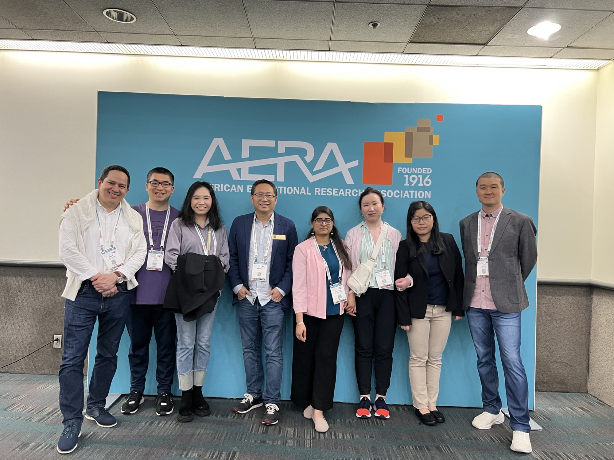
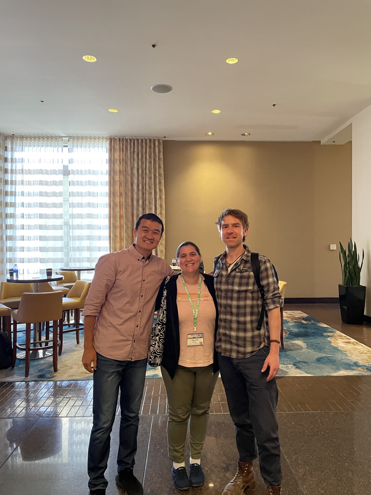
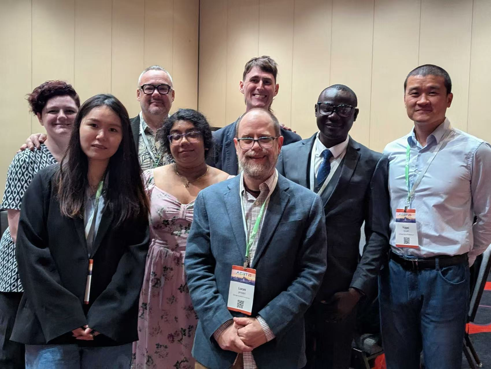
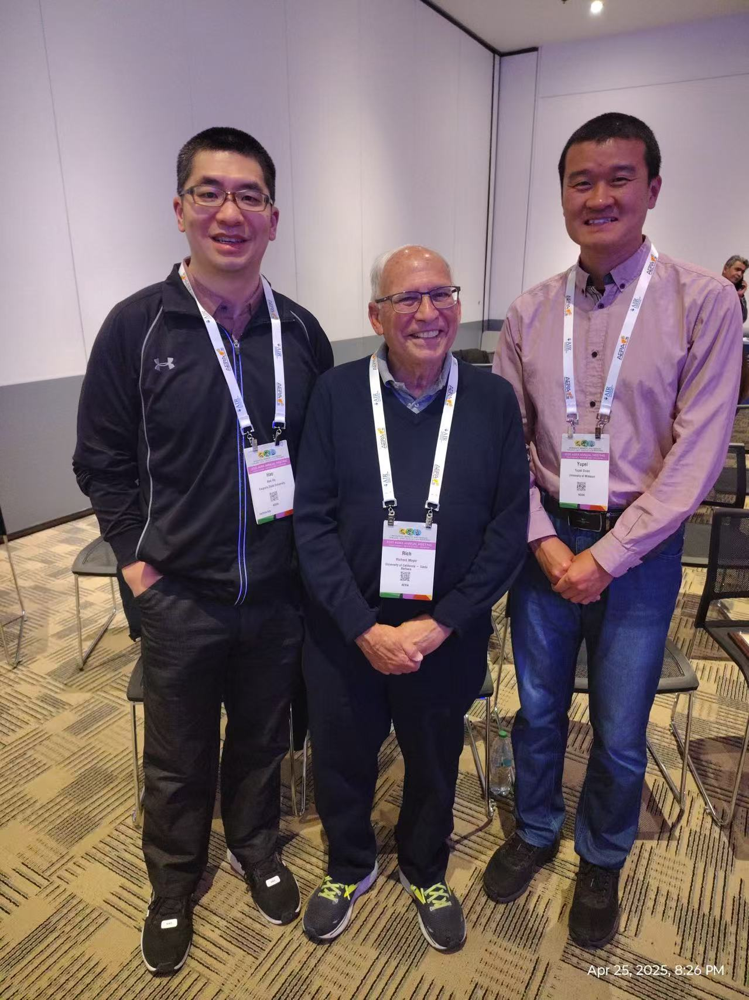
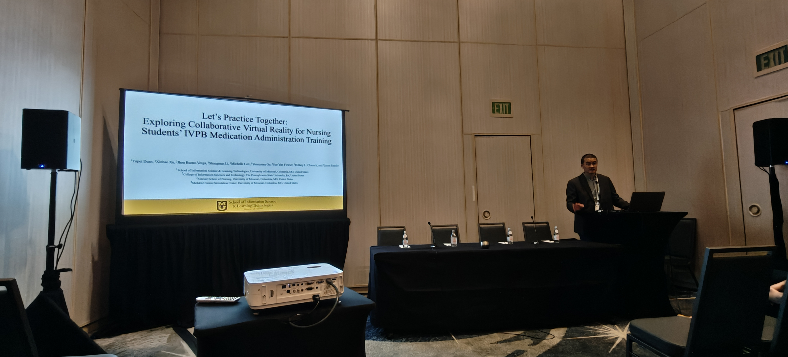
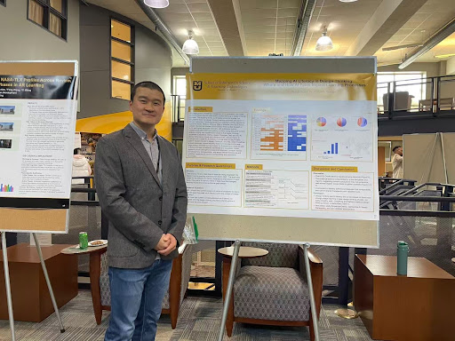

2026
The Role of Cognitive Load and Engagement in Students’ Adoption of an AI-Supported VR Training System
Bueno-Vesga, J. A., Xu, X., Gu, Y., He, H., Li, S., & Duan, Y.
IEEE Transactions on Visualization and Computer Graphics, 32(5), 4617–4625
学术成果
这里汇集我已发表、已接收及审稿中的工作。若想了解这些研究从什么问题出发、采用什么方法，以及我在其中承担的具体工作，可以从 研究页面 继续读起。
同行评议论文
每篇论文均附 DOI 或出版方链接，可据此查阅原文、核对书目信息。
2026
Bueno-Vesga, J. A., Xu, X., Gu, Y., He, H., Li, S., & Duan, Y.
IEEE Transactions on Visualization and Computer Graphics, 32(5), 4617–4625
2026
He, H., Xu, X., Li, S., Bueno-Vesga, J. A., Duan, Y., & Gu, Y.
International Journal of Educational Technology in Higher Education, 23, Article 12
2026
Duan, Y., Xu, X., He, H., Gu, Y., Li, S., & Bueno-Vesga, J.
IEEE International Conference on Artificial Intelligence and Extended and Virtual Reality, 98–107 · 最佳论文提名
2025
Duan, Y., Xu, X., Wang, F., Shyu, C.-R., Islam, S. K., et al.
IEEE International Conference on Advanced Learning Technologies, 308–312
2025
Duan, Y., Xu, X., He, H., Li, S., & Gu, Y.
Journal of Interactive Learning Research, 36(1), 83–100
稿件进展
期刊稿件
期刊稿件
期刊稿件
近期报告
以下报告已获接收，按会议及活动列出。时间、地点与官方链接一并附上，欢迎来听，也欢迎交流。
教育传播与技术协会（AECT）2026 年国际年会
图书馆与信息科学教育协会（ALISE）2026 年年会
教育与人类发展学院研究交流
论文与报告资料
论文呈现完整论证，海报与报告提供另一种阅读入口。这里收录部分期刊文章、会议论文、海报、幻灯片及视频报告的公开版本；英文题名与书目信息保留原文，便于检索和引用。
学术交流现场
报告需要把自己的研究讲清楚，讨论则提醒我从别人的角度再想一遍。这些照片记录了会场里的讲述、倾听，以及与合作者共同学习的时刻。






早期教学研究
怎样用模型帮助学生理解血液循环，怎样让实验真正成为探究，怎样把课堂延伸到博客之中——这些是我在中学生物与科学教学中面对过的具体问题。以下文章保存了当时的探索，也留下了今天研究的来路。
2015
段玉佩、陈月艳
生物学通报, 50(10), 33–35
2015
段玉佩
基础教育课程, 2015(2), 62–64
2013
段玉佩、王耀、李京燕、龚宇
北京教育（普教）, 2013(4), 42–44
2010
陈月艳、雷明、段玉佩
生物学通报, 45(4), 42–45
2009
段玉佩
生物学通报, 44(4), 42–44
以上保留发表时的中文原题，所附 PDF 均为已发表原文。